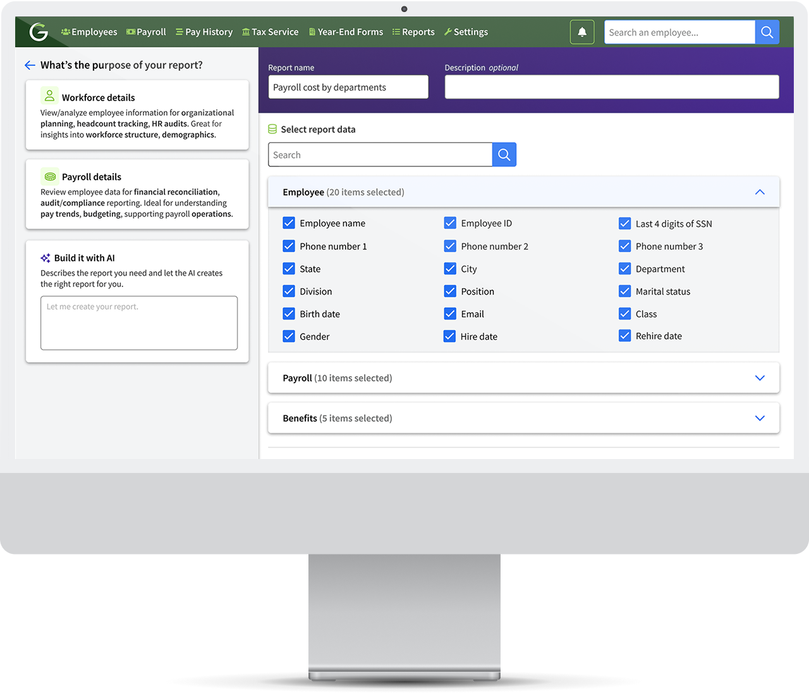
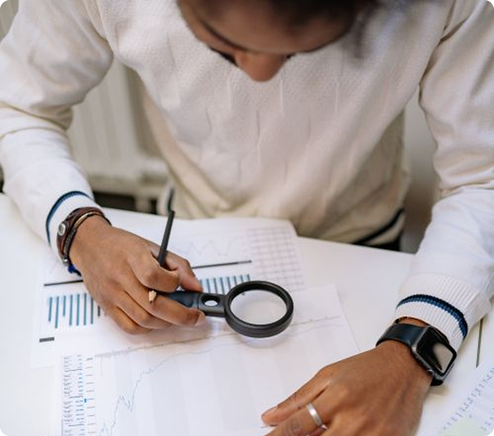
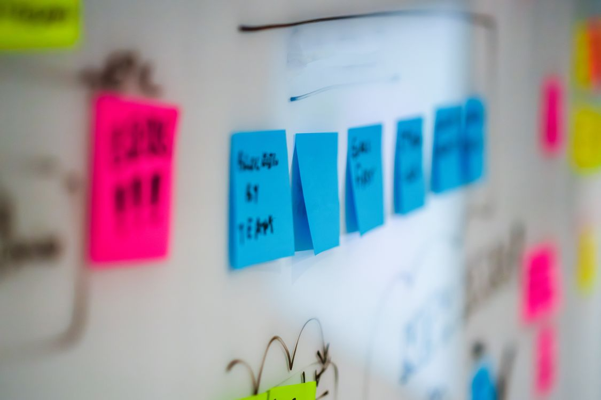
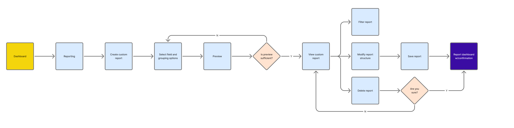
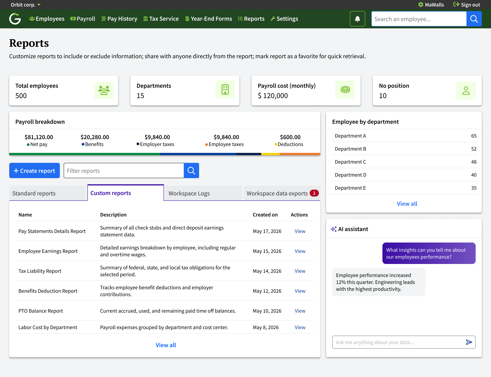
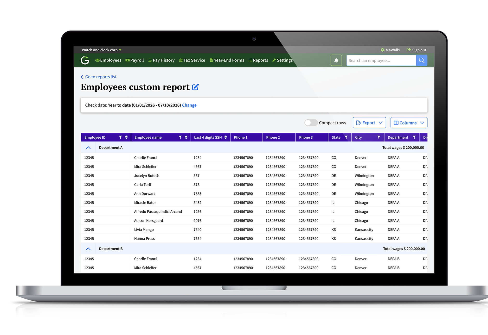

AI Custom Reports: Reducing Report Creation by 30%
New module for HR administrators to build, manage and generate their own reports — giving them full control over the information they need, powered by AI.

The Challenge
Problem
Clients have a long list of generic reports but struggle to generate their own custom reports by combining values from existing structured reports.
Solution
The solution was built in two stages — first giving HR admins a structured way to build their own reports, then layering in AI to make that process significantly faster.
Custom report builder
Select and combine values from existing structured reports.
AI-assisted creation
Describe the report in plain language and let AI configure the fields and structure.

My Design Journey
The project moved through four key phases, each building on the previous to ensure the solution was grounded in real user needs and validated before development.
Research & Discovery

User Interviews
Direct conversations with HR and operations stakeholders surfaced a consistent theme: standard, one-size-fits-all reports couldn't keep up with how differently each client's business actually operated. Teams managing large or multi-client headcounts needed the flexibility to define their own metrics rather than work around a fixed template.
"Every client has different reporting needs. We need the ability to build reports that adapt to our business, not the other way around."
"Our company manages over 3,000 employees across multiple clients. The standard reports don't give us the flexibility to track all the metrics we need."
User Personas
Research and AI-assisted synthesis surfaced three distinct HR admin profiles, each with different reporting needs and technical confidence levels.
📌 Key insights from user research:
· The platform needed a quick way to manage all report needs, but also a way to consolidate data from different sources into a single report.
· Need to have report users reviewing data from different sections.
· Users wanted a quicker way to generate reports they need to share more easily.
User Flow
The flow was designed to support both creating and managing custom reports, with clear decision points for previewing, modifying, and deleting.

Preview is a critical decision gate
Users need to validate the report structure before committing.
Filtering and modifying are separate post-creation needs
Once a report is created, users have two distinct follow-up needs: filtering the data they see, or modifying the report's structure.
Leadership & Strategy
- Led a full review of the existing reporting experience before proposing any direction, ensuring the strategy was grounded in real findings rather than assumptions.
- Made the call to introduce AI into the report-building experience — shifting the team's approach from manual configuration to a model where users describe their need and AI generates the report.
- Defined an MVP-first approach, scoping the first release down to a choice between a template or an AI-built custom report, instead of trying to ship every capability at once.
- Set the direction for how the product would scale beyond the MVP — enriching reports with data from other parts of the product, and giving users filtering control over columns and statuses.
Product Design
AI-Assisted Prototyping
Design System
Enhanced User Adoption
Optimize dashboard overview and power up reports with AI
Managers felt overwhelmed by the volume of data and struggled to know where to focus their attention. I organized the information hierarchy to display a general overview at the top because managers need totals before details.

Build custom reports faster by describing your need with an AI assistant.
Standard reports were not covering clients' needs for tracking organizational structure and financial data. They needed real-time and reliable information to make decisions. I integrated conversational AI into the dashboard experience, asking managers for their purpose upfront and letting them explore workforce data through natural language queries, with prefilled fields they can unselect or add new ones to.
From static exports to actionable insights.
Users now have full ownership of their reports. They can customize data, refine results with filters, save configurations, and revisit reports whenever new insights are needed.

Test & Deliver
After launch, the custom reports module received strong adoption and positive feedback. Usage data shows users actively returning to the module — not just creating reports, but exploring filters and refining results to find exactly what they need. The growth across every metric reflects a team that has moved from relying on generic, static reports to confidently building their own.
a report
reports
filters
custom report